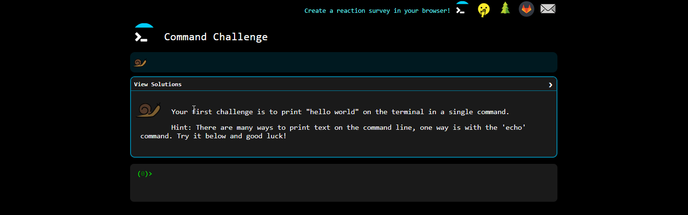
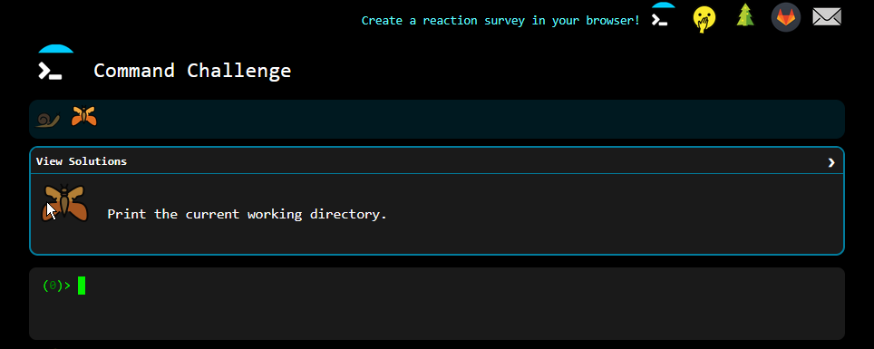
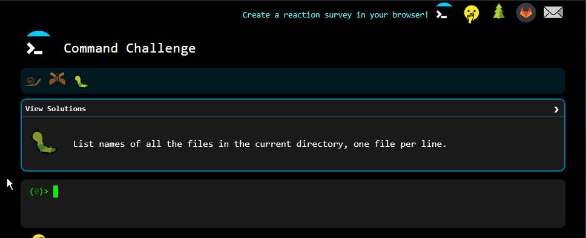
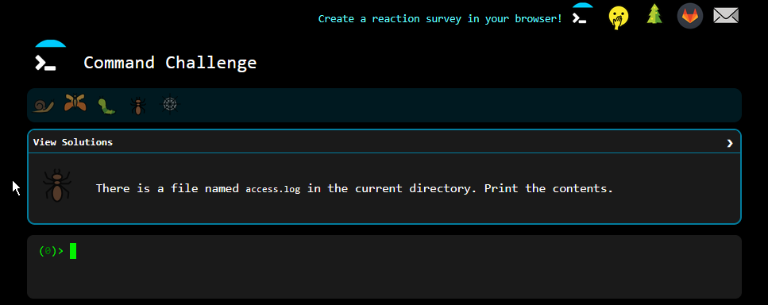
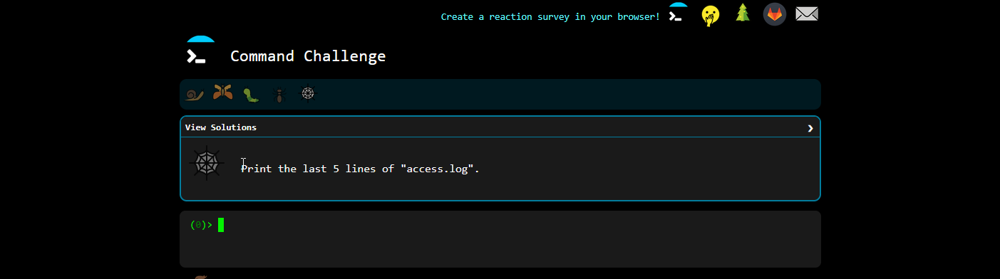
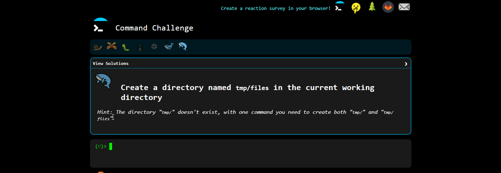
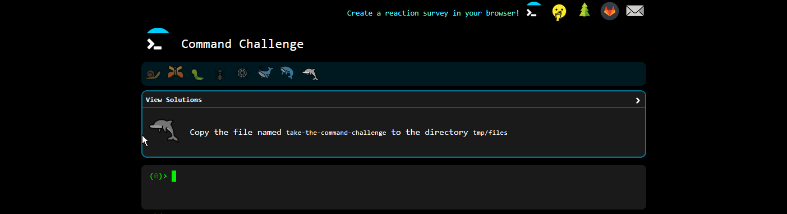
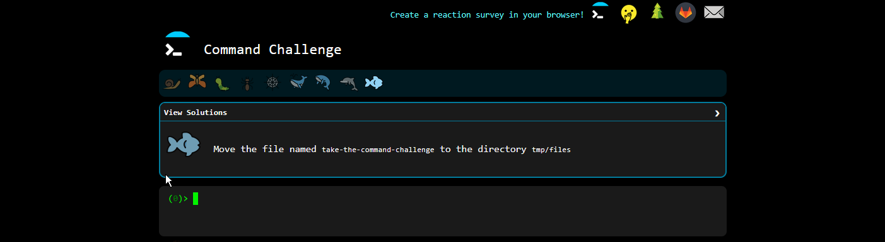

hello everybody this is jojo and this is my writeup of cmdchallenge where i go through all the levels and explain each level as i do them. we that being said lets begin.
level 1
as you can see with the screenshot above the answer is using the echo command to print the phrase hello world to the screen. you can also use printf but i chose to use echo to keep it simple.
echo "hello world"
level 2
on level 2 all you need to do is to print the current working directory. you can do this easily with the pwd command
pwd
level 3
on level 3 all you need to do is to list all the files in the current directory. you can easily do that with the ls command.
ls
level 4
on level 4 all you need to do is print the contents of access.log to the command line. this can be done by using the cat command
cat acess.log
level 5
on level 5 all you need to do is print the last 5 lines of access.log. you can do this with the tail command and the n flag arguement. there are two commands: head and tail. head reads from top to bottom and tail reads from bottom to top.the n flag specifys how many lines to output.
tail -n 5 access.log
level 6
on level 6 all you need to do is make a new file called "take-the-command-challenge" with the touch command.
touch take-the-command-challenge
level 7
on level 7 all you need to do is make a tmp directory with another directory called files within it. to do that you can use the mkdir command with the -p flag. the mkdir command makes a directory and the -p flag specifys making a parent or parents directory.
mkdir -p tmp/files
level 8
on level 8 all you need to do is copy the "take-the-command-challenge" file to the tmp/files directory. you can easily do that with the cp command.
cp take-the-command-challenge tmp/files
level 9
on level 9 all you need to do is move the "take-the-command-challenge" file to the tmp/files directory. you can easily do that with the mv command.
mv take-the-command-challenge tmp/files